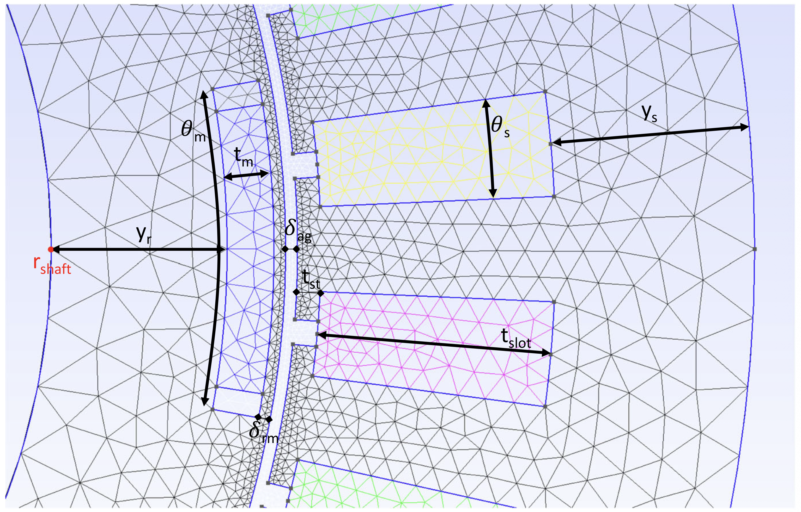
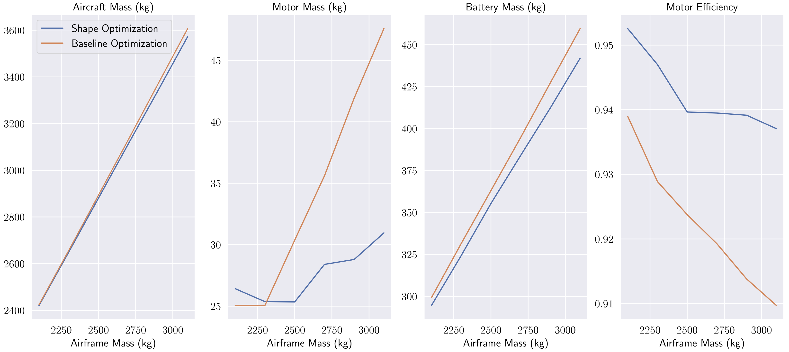

We apply adjoint-based shape optimization to electric motors for aircraft propulsion. Motor geometry affects both machine mass and electrical efficiency, so a lighter motor must be assessed together with the battery mass needed to power the aircraft.
Connecting electromagnetic shape to aircraft mass
The study combines free-form geometry deformation, differentiable mesh warping, and finite-element electromagnetic analysis within an aircraft-mass objective. Its representative motor design reduces motor mass by 35% and increases efficiency relative to the baseline, demonstrating how detailed machine geometry can be optimized while accounting for system-level consequences.
Paper: Scotzniovsky et al. [1]




Optimization problem
| Formulation element | Comprehensive motor design |
|---|---|
| Case | Permanent-magnet motor design with an aircraft-mass objective |
| Objective | Minimize total aircraft mass. |
| Design variables | |
| Current amplitude, I_amp (100–600 A) | 1 |
| Motor length, L (60–80 mm) | 1 |
| Shaft-radius change, r_shaft (−25 to 10 mm) | 1 |
| Rotor-yoke-thickness change, y_r (−10 to 10 mm) | 1 |
| Magnet-thickness change, t_m (−2 to 2 mm) | 1 |
| Rotor–magnet-clearance change, δ_rm (−1 to 1 mm) | 1 |
| Magnet-width change, θ_m (−0.14π/6 to 0.07π/6 rad) | 1 |
| Air-gap-thickness change, δ_ag (−1 to 1 mm) | 1 |
| Stator-shoe-thickness change, t_st (−1 to 1 mm) | 1 |
| Slot-thickness change, t_slot (−5 to 5 mm) | 1 |
| Stator-yoke-thickness change, y_s (−10 to 5 mm) | 1 |
| Slot-width change, θ_s (−0.05π/18 to 0.05π/18 rad) | 1 |
| Total design variables | 12 |
| Constraints | |
| Torque balance, τ_l = τ_r | 1 |
| Voltage limit, V_lim ≤ 800 V | 1 |
| Total constraints | 2 |
| Models and conditions | A permanent-magnet synchronous pusher motor for the NASA lift-plus-cruise reference aircraft; differentiable motor analyses and a range relation connecting motor efficiency to battery mass. |
| Representative source | Geometric design of electric motors using adjoint-based shape optimization |
| Source locator | Table 3 and Section 4.3.2. |
References
- Luca Scotzniovsky, Ru Xiang, Zeyu Cheng, Gabriel Rodriguez, David Kamensky, Chris Mi, John T. Hwang. Geometric design of electric motors using adjoint-based shape optimization. Optimization and Engineering, 2025.DOIPDF
@article{scotzniovsky2025geometric, author = {Luca Scotzniovsky and Ru Xiang and Zeyu Cheng and Gabriel Rodriguez and David Kamensky and Chris Mi and John T. Hwang}, title = {Geometric design of electric motors using adjoint-based shape optimization}, journal = {Optimization and Engineering}, year = {2025}, volume = {26}, number = {1}, pages = {121-158}, doi = {10.1007/s11081-024-09892-6}, url = {https://doi.org/10.1007/s11081-024-09892-6}, note = {Metadata verification: Crossref DOI} } - Zeyu Cheng, Shuofeng Zhao, Luca Scotzniovsky, Gabriel Rodriguez, Chris Mi, John T. Hwang. A Differentiable Method for Low-Fidelity Analysis of Permanent-Magnet Synchronous Motors. AIAA SciTech 2023 Forum, 2023.PDF
@inproceedings{cheng2023differentiable, author = {Zeyu Cheng and Shuofeng Zhao and Luca Scotzniovsky and Gabriel Rodriguez and Chris Mi and John T. Hwang}, title = {A Differentiable Method for Low-Fidelity Analysis of Permanent-Magnet Synchronous Motors}, booktitle = {AIAA SciTech 2023 Forum}, year = {2023}, note = {Metadata verification: Crossref unavailable: HTTPError} } - Zeyu Cheng, Zhi Cao, Chris Mi, John T. Hwang. Cost Optimization of Electric Vertical Takeoff and Landing Aircraft Through Powertrain Modeling. Journal of Air Transportation, 2025.DOIPDF
@article{cheng2025cost, author = {Zeyu Cheng and Zhi Cao and Chris Mi and John T. Hwang}, title = {Cost Optimization of Electric Vertical Takeoff and Landing Aircraft Through Powertrain Modeling}, journal = {Journal of Air Transportation}, year = {2025}, volume = {33}, number = {3}, pages = {285-296}, doi = {10.2514/1.d0487}, url = {https://doi.org/10.2514/1.d0487}, note = {Metadata verification: Crossref DOI} }
Research connections